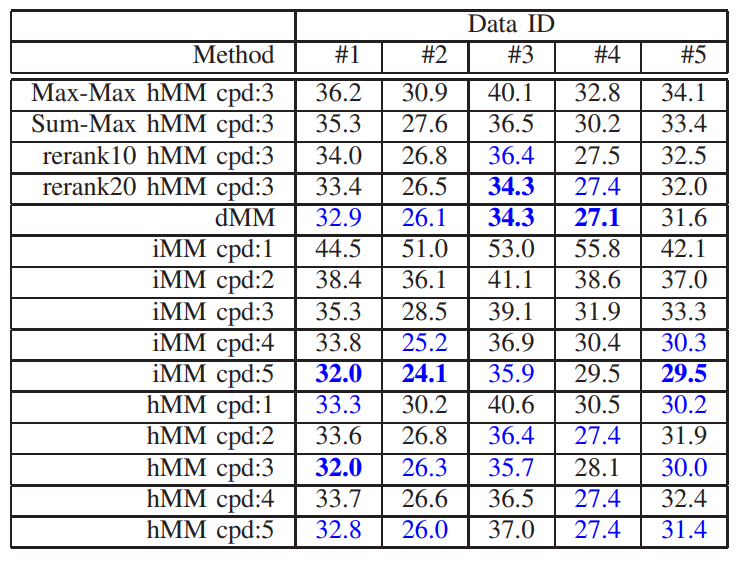

In this paper, we explore the challenging 1-to-N map matching problem, which exploits a compact description of map data, to improve the scalability of map matching techniques used by various robot vision tasks. We propose a first method explicitly aimed at fast succinct map matching, which consists only of map-matching subtasks. These tasks include offline map matching attempts to find a compact part-based scene model that effectively explains each map using fewer larger parts. The tasks also include an online map matching attempt to efficiently find correspondence between the partbased maps. Our part-based scene modeling approach is unsupervised and uses common pattern discovery (CPD) between the input and known reference maps. This enables a robot to learn a compact map model without human intervention. We also present a practical implementation that uses the state-of-theart CPD technique of randomized visual phrases (RVP) with a compact bounding box (BB) based part descriptor, which consists of keypoint and descriptor BBs. The results of our challenging map-matching experiments, which use a publicly available radish dataset, show that the proposed approach achieves successful map matching with significant speedup and a compact description of map data that is tens of times more compact. Although this paper focuses on the standard 2D pointset map and the BB-based part representation, we believe our approach is sufficiently general to be applicable to a broad range of map formats, such as the 3D point cloud map, as well as to general bounding volumes and other compact part representations.
Fig. 1. Compared to existing direct map matching (“dMM”) methods, our method indirectly matches between the local map and each of the global maps, while using a known reference map as the intermediary. In offline work, a common pattern discovery (“CPD”) process translates an input local/global map to a compact part-based map descriptor (“MD”), by extracting representative parts (colored bounding boxes) that effectively explain an input map from a known reference map. In online work, a descriptor matcher (“DM”) rapidly matches between the compact part-based maps.
Fig. 2. Three types of map matching schemes considered in this study: direct map matching (dMM), indirect map matching (iMM) and hybrid map matching (hMM). The dMM scheme directly matches between a given map pair, while the iMM and the hMM schemes match in an indirect manner using a given dictionary map as intermediate. While iMM deals with a situation where only the compact map descriptors are available, hMM addresses a situation where the original local map data is available.
Fig. 3. Datasets used for experiments. “abuilding”, “albert”, “claxton”, “fr079”, “run101”, and “kwing” from radish dataset [13] are used as the dictionary maps. “Local/global maps” are several samples from local and global maps.
Fig. 4. Results of part-based scene modeling. For each panel, the top subpanel shows the input local map, while the middle and the bottom subpanels respectively illustrate the representative parts discovered w.r.t. the local and the global maps. In each figure, the white dots indicate point cloud in the map, and the colored rectangles indicate bounding boxes that crop the representative parts.
Table1：SUMMARY OF ANR PERFORMANCE.
The Data ID #1-#5 correspond to ANR for global map database from “fr101”, “abuilding”, “albert”, “kwing” and “fr079”, where “fr079”, “fr101”, “run”, “claxton2” and “albert” are respectively used as dictionary map. The colored fonts and the bold-face fonts respectively represent the best 5 methods and the best method for each data.
Fig. 5. Normalized rank for each strategy.